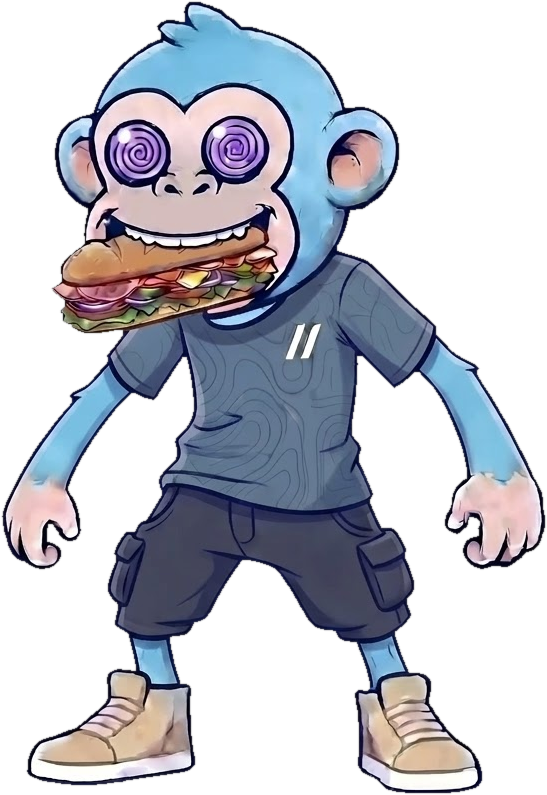

Todo en una sola página que se baja con el dedo, en el orden del mostrador de Subway. Cada bloque dice si falta (Requerido) o ya está (Listo ✓), se elige con círculo (uno) o casilla (varios), y el precio va siempre abajo. Los nombres y precios son los de la carta de hoy.
Elige de arriba abajo. Lo que falta, se marca.

Elige 1
Elige 1
Elige 1
Elige 1
Los que quieras
Hasta 3